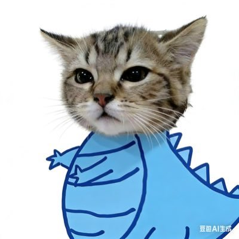

星野ふじ
@hoshinofujivy
@nekoeroemon 这是原因：
星野ふじ
@hoshinofujivy
刚刚挂完点滴，手可以用了：
帮忙送货,用的电动摩托车,道路光滑，急转弯速度过快，失控摔倒，被甩飞。疼痛难忍路人帮我联系家人，送去医院
落地过猛，11、12号脊椎断裂并错位。要很长时间修养。意识清醒，没有其他内伤。
手机屏幕摔碎了，刚刚修好送来 https://t.co/Sh9fMqCAeU

社畜猫/（其实楚晨是敏感字
@nekoeroemon
@hoshinofujivy 前情提要没看 什么原因导致的
每天坚持同一套康复就对了